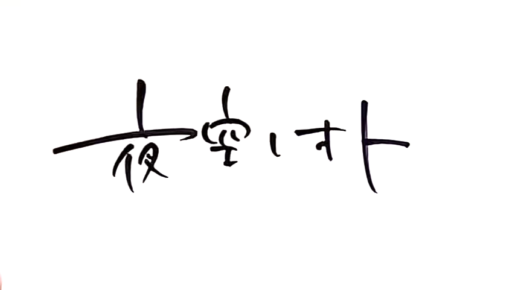

画家のLEAFER様が戯れに書いてくださった素敵なロゴ✨️
夜空ノオト
【第一話 Crossfade】
高速道路 車の後部座席に夜空が乗っている。
夜空は携帯ゲームをしている。
以下夜空の声。脳内で語るナレーションのような感じ
アニキが亡くなった
真昼アニキは、生まれた時から体が丈夫じゃなかった
あたしが小学生の頃、
アニキの体の療養で、
あたし達家族は、空気の綺麗な田舎に引っ越したけど、
思い出シーン
（横浜の友達とお別れをする小学生夜空）
夜空ちゃん、田舎に行っても、元気でね（後の心愛）
（場面転換 都会の学校から田舎の学校）
（田舎の子に紙クズを投げられる夜空）
あたしは何も良い事がなかった
アニキは結局、
一度も病院の外に出ないまま亡くなった
（思い出 窓の外を眺めるシルエットの真昼と窓からの後光、真昼の学生服のショット）
言われた事なかったけど
アニキ、外出たかったのかな
真昼アニキが死んでしまって、
田舎にいる理由が無くなったあたし達は、
元々住んでた横浜に戻る事になった
田舎に引っ越す時はあんなに嫌な気持ちだったのに
アニキがいなくなって田舎を出る事になった時は、
複雑な気持ちだった
だって…真昼アニキだけ田舎に置いて、
アタシ達だけ帰ってきたみたい
そんなの‥無いじゃん
アニキが居なかった事になってくみたいで
なんか嫌だ
車は高速道路を降りて一般道へ
運転中の父「ここでちょっと休憩していこう」
＊山下公園のそば 車を停める
降りてくる夜空
公園へ進み、海の前で背伸びをする
海風に髪がなびく
こっち‥別に空気悪くないじゃん
山下公園のバラアップ
アニメのタイトル
夜空ノオト
◦夜空家族が引っ越す先のマンションの外観
◦作業員とオーライの声
◦マンションに荷物を運び込む作業員
◦リビング 荷物が沢山
ここからアニメの印象を明るく変える為、BGMを明るくする
ママ「ここあんたの部屋ね」ガチャ
夜空「わぁーあ‥あー。んー？凄く‥ふつう？」
ママ「6畳はみんなこんなもんよ」
夜空窓に近づいて開ける
夜空「窓の外、ビルの壁しか見えないんだけど！？？」
ママ「人が多いとこに住むってそういう事よ」
夜空「この窓何の為にあるの？？」
夜空「でも和室界隈卒業だやった！」
ママ「部屋片付けたらリビング手伝いに来て」
夜空「あー」
ママ「変な返事しないの」
◦リビング
夜空「ママこれなに？アタシの荷物に混じってた」
ケースを抱えた夜空が顔を覗かせる
夜空ケースを覗き込んで「字読めない」
ママ「あー。真昼のアレだ」
夜空「？あれ？」
ママ「あの子、VTuberが好きでずっと見てたでしょ。
名前なんだったっけー？何回聞いても忘れるのよね。年よねぇ
奇跡的に抽選に当たったんだって。推しvtuberのサイン入りギター」
ママは夜空に話しながら作業を続けている。
その時、ママの段ボールから小さなマスコット人形が出てきて、
「これもまひるの」、とつぶやいて、ギターケースに付ける
vtuberのミニマスコットと、もう一つ磁石で手を繋ぐようにもう一つのマスコットが対になっていて、そちらには真昼と書いてある
夜空がマスコット人形を見つめる
夜空「‥これ開けてもいい？」
ママ「いいよ」
パカ
夜空「…すぅご。ギターだ。」
ママ「…弾けるくらい治ってくれてたらね」
夜空ギターを見つめる
「‥夜空みたいな色」
ママ 見ないで言う
ママ「アンタと一緒で丁度いいわね。それアンタの部屋置ける？」
夜空「え？場所なくない？無理」
ママ腕組みをして眉間にシワ
「はぁ。どこも前より狭くてねー、はぁー。。。じゃあそれも処分かな」
夜空「え処分って‥捨てるって事！？」
ママ「売るわよ」
リフレイン
（アニキがいなかった事になってくみたいで、凄く嫌だ）
夜空表情アップ。眉間にシワが寄る。ギターを見つめる
ギターを写す
夜空「‥やっぱ私の部屋持ってく！」
カバーを戻してケースを抱っこする
ママ「どっちよ？アンタそれ弾くの？」
夜空「ひ‥‥ひく？‥‥あたしがギター弾く？？（疑問）……ひ、弾くよ！（勢い任せの決意）」
ママ「そうなの？ならお店に持ってって調整してもらいなさいよ」
カメラ引いて中央に夜空
夜空「‥調整ってナニ？」
作業員が運び込んだTVを設置して動作確認をして、テレビを離れる
作業員「テレビ動作okでーす」
ママ「はーいありがとうございます」
テレビにはVtuberくろいもふが出演していて会話している
夜空もママもTVがついている事は認識しているが見ていない
「リアルでは私がvtuberくろいもふだって誰にもバレないように、制約を決めてるんです」
「あら、もしバレたらどうなるの？」
「私が身バレしてしまったら‥その時は引退」
リフレイン その時は引退
場面転換
この後は夜空のマンションから横浜都心部へ向かう様子を描く
・駅の描写
◦電車に揺られている夜空
スマホで電車乗れるの凄すぎ
ナレーション 田舎は車とバスがメイン。電車にほとんど乗らずに大人になる人が沢山いるのである
周りを見渡して
（コード付きイヤホン使ってるの私だけ！？）
◦街中 スマホに地図が表示されている
スマホの地図初めて使った！スマホやばい！！
◦商業ビル前の夜空
見上げながら 高いのにほっそ…
◦登りエスカレーターの降り口、夜空が登ってきてフレームイン
夜空「あ、あった」
◦ギターショップAUBE299外観
「こういうトコってなんか緊張するな‥」
ショップに一歩入って夜空がキョロキョロ
後ろに二人組が立つ
夜空まだキョロキョロ中
「すみません‥通してもらえますか？」
「あっごめんなさっ」
夜空レジを見つけ、猫の被り物をした店員（猫店長）を見つけて衝撃を受ける
まさかあれお店の店員？都会自由すぎなんだけど！
夜空 「あの！すみません！一回電話したんですけど、ギターの調整をお願いしたくて」
猫店長 「はいありがとうございますニャ！」
猫店長お決まりの決めポーズ（すしざんまい的なやつ）。引きのショット。時が止まる
「お名前お伺いしてよろしいですか？」
「あ、えっと、ひとつや、よぞら（一津矢 夜空）、です」
「ひとつ‥えっと‥書いてもらっていいですか？」
「はい、あ！でもあの！すみません予約とかはしてないです」
「あー、いえ！わかりました、そちらのギターでしょうか？」
「はい」
「拝見しても？」
夜空ギターケースを前に出そうとして
「ここに‥乗っけて大丈夫？」
「はい、あ、私やりますね」
店員ケースを乗っけた後、失礼しますニャ、と一言目配せをして、ケースを開ける
端から端まで見る
「はぁはぁ、なるほど。フレットが綺麗。新しそうですね。こちら何かお困りな事があるんでしょうか？」
「えっと‥誰も弾いてなくて時間が経ってるので、一度楽器屋で見てもらいなさいって言われて」
「はぁはぁ、なるほど。ではコンディションの確認と、必要でしたら調整という感じのご依頼で、よろしいでしょうか？」
「たぶん‥…はい。（自分の受け答えが不明瞭だと気づいてこの後言い直す）…あ、いえ！それでよろしくお願いします」
猫店長 ニコっとした後、目を細める
「こちらケースと中にサインありますけれど‥有名な方のサインですか？」
「なんか読めないけどVtuberのサインらしいです」
「へぇ！それは凄いですね！」
「へっ？‥いえいえ凄いとかそんな！偽物とかかもしれないし！」（褒められ慣れしていないリアクション）
「はは、そうですか。こちらの箇所は仕上げ拭きをご遠慮させていただきますので、そちらご了承ください。では依頼書にご記入をお願いします」（仕上げ拭きの確認をしたかっただけ）
書いてるシーン
夜空（アニキのギターだから‥名前欄‥なんとなくアニキの名前で書いちゃったな）
依頼書のアップ 名前欄には「一津矢 真昼」
「お時間40分ほど頂きます。基本料金で大丈夫だと思いますが、別料金がかかりそうでしたらご相談させてください」
引換券のアップ
店内を見て回るシーン
超高額ギター 100万円！？
アンプ‥これもいるんだっけ？‥みんなたっかい
ギター教室の張り紙が目に入る
小走りに近寄る
ギター教室 今なら入会金3000円！月3回15000円！
こんなするの？お小遣いじゃ払えないよ
色々お金かかるんだなぁ
40分後 店内
リペア担当 氷雨翠が説明をする
「リペア部門の氷雨です。私が説明させてもらいます
コンディションは基本料金の範囲で大丈夫でした
（この後次第にオタク特有の早口になっていく）
ネックは少しロッドを回して、新品の09-42弦に張り替えさせてもらっています。弦高を少し下げて基準範囲に、ブリッジだけでナットは触ってません。フレットのバリを少し取ってあります。オクターブ調整をやった後、前後のピックアップの高さやバランスを調整しています」
どうしよう全部聞き取れたのに全く何言ってるか分からない（顔リアクション）
猫店長 ではこちらで確認をお願いいたしますニャ
◦試奏コーナーを促される
「いえいえいえ！私全く弾けないので！」
顔真っ赤
「ありがとうございましたー」
画面に金額表示
ショップを出てくる夜空
グッタリうんざりしてる
「‥なんか疲れた」
翠 ゴミ箱の中の、捨てられた弦を見る。
あのギター、フレット新品なのに弦の一部分だけ錆びてた。まるで弾かずにずっと撫でてたみたい
夜空 自販機コーナーを見つける
◦自販機と長椅子があるシーン
ジュースもスマホで買えるの！？
ジュース買う
ピッ ゴトン
座って飲む
クピ
ふとももの上に肘を置いて、頭をうなだれる
はー。お金かかるしギター無理そう
こんな重いもの持って、、、、あたし何やってんだろ
一瞬無音になってスロー
項垂れる夜空の頭の前を、何かが横切る
ピアノの音がポロン
（‥花の香りがする。香水かな）
うなだれたままの夜空の横でジュースを買うもふ
ピッゴトン
ジュースを取ろうともふがしゃがむと、
長椅子に立てかけられた夜空のギターケース、その下部にある自分のサインと自分のマスコットの後ろ姿が目に入る
まひるの文字は裏返しになっていて見れない
もふ「あっ！！」
夜空「ビクッ へっ」
もふ「ギター！‥。あ、ごめんなさい。これギターですよね」
夜空「あ、はい。そうですけど」
夜空（この人ギター弾く人なのかな）
もふしばらく考える顔をする
もふフラッシュバック
配信画面
真昼「もふちゃん！ギター懸賞当たったよ！マジ嬉しい！病気治ったら弾きまくるわwww」
もふ「わー✨まひるちゃんこれ当たったの！？やったね🥰」
真昼「弾きまくって世界一上手くなってやるわwww始めたら色々教えてな！」
もふ「うん🥰教えるよ！約束する！だから早く良くなってね。サインしとくね」
もふサインをする
「うおー！サインありがとう！もう良くならなくて死んでももふちゃん応援するわwwww」
もふ「やめて笑」
フラッシュバック戻る
もふ「‥‥‥まひるちゃん」
夜空ドキッとする
へっ！？
言った後、もふもドキッとする
もふ（はっ しまった！つい口に出しちゃった！）
Vtuberの掟 リアルで身バレしてはいけない
「あなた‥なんで兄の名前知ってるんですか？」
夜空「‥あー？（記入表思い出す）あー！さっきのショップの方か！さっきのお姉さんと一緒にギター見てくれた‥？髪の色も音楽やってる感じだし！ギターありがとうございました！（頭下げフカブカ メンテのお礼のつもり）」
もふ「しょっ？‥あ、ギターいえいえ！（頭下げフカブカ つい頭を下げてしまう）」←パンを買いに来てただけの一般人（店員ではない） と文字を入れる
もふ心の声 やばい！つい反応しちゃった！
夜空「真昼はアニキの名前で、私じゃないんですけど」
もふ「アニキ？（せーーふ！！助かった！）」
夜空「いえ代理というか証をついだというか、いやアタシなんでこんな事まで話してるんだろ」
もふ「？？」
もふ 同じベンチに座ってジュースを飲む
夜空の方を見る
夜空（やば横座っちゃった！どうしようめっちゃ見られてる。ちゃんと説明しないといけない空気？）
もふ「ギター可愛いですよね🥰綺麗だし✨」
夜空「ありがとうございます。見ましたよね？サイン」
もふ「うん🥰」
夜空「なんかVtuberと同じギターらしくて」
もふ（バレないようにしないと）
もふ「そうなんですね！それは凄いですね！（白々しい）」
夜空「いやそんな凄いだなんて！偽物とかかもしれないし！（褒められなれしてないリアクション）」
もふ「えっ！？本物だよ？」
夜空「えっ？」
もふ「あっ」
もふ口を手で抑える
ちょっと沈黙が流れる
夜空「あー。これ有名なVtuberのサインなんですか？私全然知らなくて」
もふ「いえ‥無名でド底辺のゴミみたいな奴です‥」
夜空「えちょっ‥ そんな言い方なくない！？」
もふ「ゴフッ（吐血）」
夜空「わっ大丈夫です！？？」
画面にテロップ 致死量の毒
シーンカット
夜空「これ‥アニキが好きだったVtuberのサイン入りギターみたいなんですけど」
もふ「うんうん うんうん うんうん」
夜空「アニキ病気で亡くなってしまって」
もふ「えっ‥」
（まひるちゃん‥ダメだったんだ‥）
夜空「それでそのままにしとくのもなぁって持ってきたんですけど
‥ギターって色々お金かかるんですね。習おうと思ってたけど、毎月の月謝払うの無理だなって
現実を知って、ちょっと落ち込んで帰る所でした、あはは」
まひるの事実を知って深く落ち込むもふ
真昼のセリフフラッシュバック
「弾きまくって世界一上手くなってやるわwww始めたら色々教えてな！」
もふの目のアップ
もふ「‥うん、お金かかるよね。あの」
もふ「もしよかったらなんだけど」
夜空「はい」
もふ「私ギターを教える練習がしてみたくて。お代要らないから、私からギター習ってみません？」
夜空「ええっ！？無料で？？ってなんでです？ってそっか店員さんだし教える練習とかやるものなのか？？」
もふ「てんいん？？」
夜空「教えてもらえたら･･･嬉しいですけど、でもいいのかなぁ、無料だとちょっと悪いなって思ったり」
もふ「条件が合えば、になってしまうけど。場所はこのビルの屋上階で、お店が全部閉まった後しか出来ないから、レッスンスタートは夜9時とかになっちゃう。大丈夫そう？」
夜空「はい、大丈夫です」
もふ「あともう一つ」
（私がVtuberなの知られないようにしないと）
くろいもふ夜空に近寄る
もふ「これはお願いなんだけど‥私からギターを教わる事は秘密にして、誰にも知られないで欲しい。二人だけの秘密。バレたら終わり。約束出来る？」
夜空「不公平ですもんねー、生徒さんの中で私だけタダなんて！わかりました誰にも言わないです」
もふ「じゃあよろしくね」
握手
夜空「ありがとうございます！一津矢夜空といいます。ふふ、私ちょっと変な名前ですよね」
もふ「ふふ、ちょっと変な名前だね🥰」
夜空「ハッキリいいますね笑」
もふ「私はくろいもふだよ。よろしくね」
夜空「私より変な名前w」
笑い合う二人
エンディング曲 さよならポラリス
音声を再生する